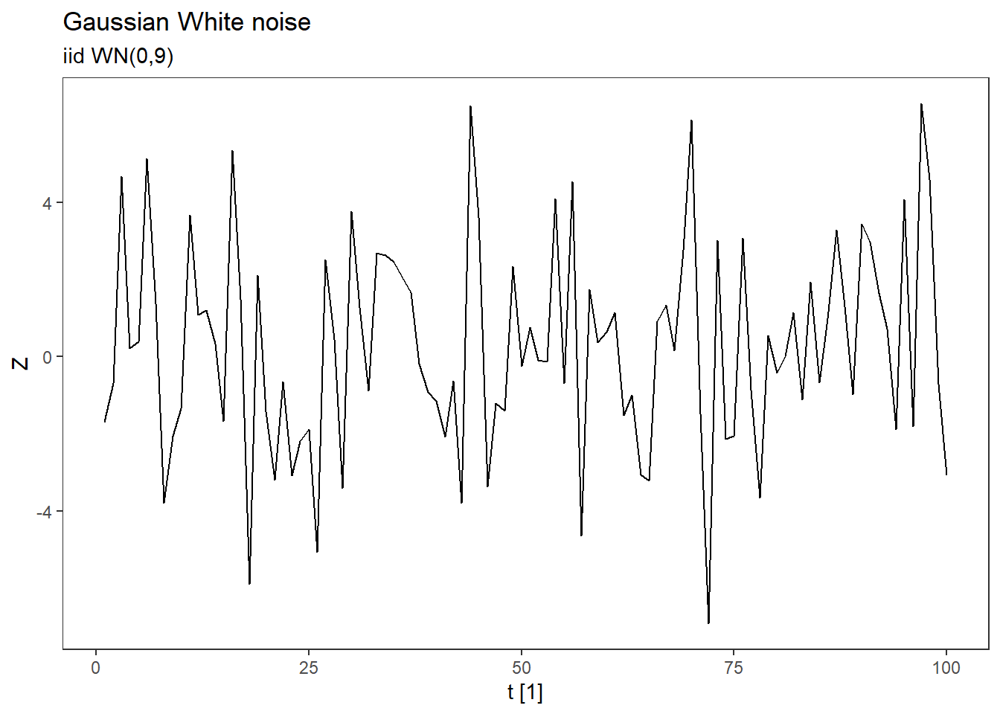
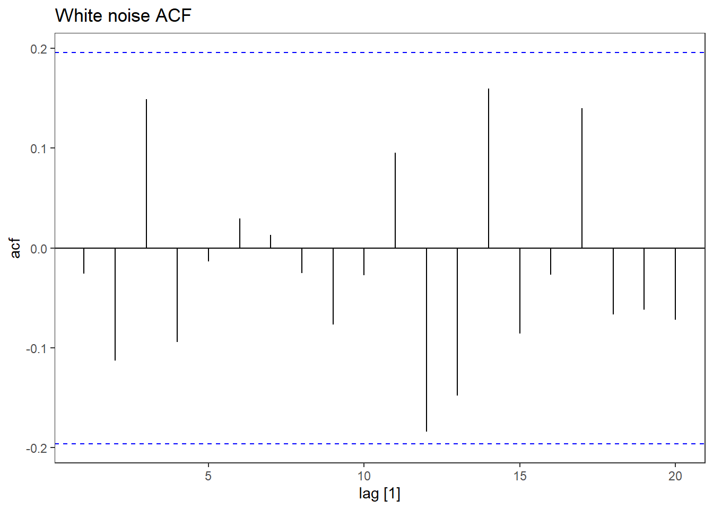

Time series basics
In this chapter, we will cover some key concepts of time series that you need to know. You should build up an intuition of what a stationary time series is, and what autocorrelation is. White noise is a simplest time series process you can think of and the building block of ARIMA models. Here we try to give a short introduction to these concepts. Some of these have already been introduced in MET4 at NHH. So if you have taken that course, this may serve as a short repetition.
What is time series data
Below is a video from Aric LaBarr’s youtube series explaing time series concepts in less than 5 minutes. In the video below he explains what time series data is - as opposed to cross sectional data. As he points out, we also some times have a combination which we can e.g. aggregate to cross sectional data or time series data.
Time series notation
It is quite common in statistics in general, but also in time series analysis, to distinguish between capital and non-capital letters. While Y_t denotes the stochastic variable Y at time t, y_t is the realization of said stochastic variable Y_t, i.e. an observed value. Y_t is a specific variable, while \{Y_t\} is the entire time series. While a stochastic variable has for instance an expectation, a variance, a dependence structure and a distribution, an observation is just a number.
Let \mu_t=\mu_Y(t)=\mathrm{E}(Y_t) denote the mean function of Y_t. Assuming that E(Y_t^2)<\infty, the covariance function of \{Y_t\} is denoted \gamma(r,s)=\gamma_Y(r,s)= \mathrm{Cov}(Y_r,Y_s)=\mathrm{E}(Y_r-\mu_r)(Y_s-\mu_s). If the covariance function does not depend on the specific values of r and s, but rather the distance between them h = |r-s|, we write \gamma(r,s)=\gamma(h). Likewise, if \mu_t does not depend on t, we write \mu_t=\mu. This will be used in the section about stationarity below. Note that the variance of Y_t is given by \gamma(t,t) = \mathrm{Cov}(Y_t,Y_t) = \mathrm{Var}(Y_t) or \gamma(0) in the case where the covariance does not depend on t.
tsibble
The tsibble object will be important in this course. Since we are working in the tidyverse, things will be easier if we commit to it. Converting your data to a time series tibble (tsibble) is essential. The tsibble extends the tidy tibble data frame by introducing temporal structure. Read the chapter 2.1 about tsibble objects in the textbook. Here you find several coding examples.
Stationarity
We return to Labarr’s time series in 5 minutes series on youtube explaining stationarity. This is a key concept in time series. The video by Labarr gives a nice intuition for the concept. It separates between strong and weak stationarity. In this course, the weak stationarity condition will be the one we focus on, but it is nice to know that there are other definitions of stationarity as well. For a time series to be (weakly) stationary the mean and variance of the time series variable Y_t should not depend on t. More formally, a time series is weakly stationary if
- The expectation is constant: \mu_t = \mu
- The variance is constant and finite: \sigma_t^2 = \sigma^2 < \infty
- The covariance between two lagged variables only depend on the lag: \gamma(r,s) = \gamma(h), where h=|r-s|.
In the video, Labarr shows some examples of non-stationary time series which can be transformed to stationary time series by differencing. We will come back to this later in the course, when we talk about transformations and again when we study ARIMA models. We will also study examples of stationary time / non-stationary time series in the voluntary homework. You can also read about the stationarity in the textbook, but for now, you may stop after the paragraph on stationarity. The book is less specific about their definition, but we will stick the weakly stationary definition above.
White noise
A white noise series is a time series of uncorrelated observations with mean zero and finite variance. We will often write it as Z_t where Z_t \sim \mathrm{WN}(0,\sigma^2). The standard is that the series is uncorrelated, but we may require it to be independent (stronger assumption) and very often normally distributed. In that case we call it iid Gaussian white noise (iid = independent and identically distributed). Notation for this may be Z_t \sim \text{iid}\, \mathrm{WN}(0,\sigma^2). Let us generate a white noise series in R.
library(fpp3)
set.seed(123) # To produce the same output
wn <- tsibble(
t = 1:100,
Z = rnorm(100, sd = 3), # Draws from N(0, 3^2) distribution
index = "t"
)
wn %>%
autoplot() +
labs(title = "Gaussian White noise",
subtitle = "iid WN(0,9)")Plot variable not specified, automatically selected `.vars = Z`
We can then plot the acf of the series:
wn %>%
ACF(Z) %>%
autoplot() +
labs(title="White noise ACF")
As you can see, all the correlations fall within the confidence bands. The series is uncorrelated. You can also find a similar example in the textbook.